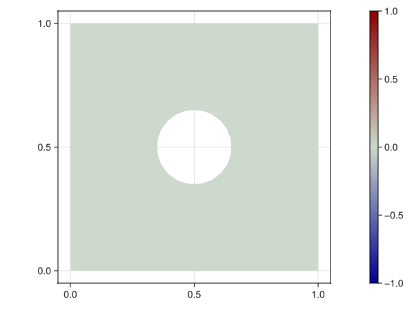

Transient heat equation

Implementation
Load dependencies form Julia stdlib.
using LinearAlgebraImport other dependencies
import GalerkinToolkit as GT
import DifferentialEquations
import ForwardDiff
import GLMakie as MakieMain program.
function main(;mesh_size=0.02,R=0.15,T=2,N=100)
#Generate mesh
mesh = GT.with_gmsh() do gmsh
R = 0.15
dim = 2
rect_tag = gmsh.model.occ.add_rectangle(0,0,0,1,1)
circle_tag = gmsh.model.occ.add_circle(0.5,0.5,0,R)
circle_curve_tag = gmsh.model.occ.add_curve_loop([circle_tag])
circle_surf_tag = gmsh.model.occ.add_plane_surface([circle_curve_tag])
gmsh.model.occ.cut([(dim,rect_tag)],[(dim,circle_surf_tag)]);
gmsh.model.occ.synchronize()
domain_tags = [1]
outer_tags = [6,7,8,9]
inner_tags = [5]
gmsh.model.model.add_physical_group(dim,domain_tags,-1,"domain")
gmsh.model.model.add_physical_group(dim-1,outer_tags,-1,"outer")
gmsh.model.model.add_physical_group(dim-1,inner_tags,-1,"inner")
gmsh.option.setNumber("Mesh.MeshSizeMax",mesh_size)
gmsh.model.mesh.generate(dim)
GT.mesh_from_gmsh(gmsh)
end
#Domains
Ω = GT.interior(mesh;physical_names=["domain"])
Γ1 = GT.boundary(mesh;physical_names=["outer"])
Γ2 = GT.boundary(mesh;physical_names=["inner"])
Γ = GT.piecewise_domain(Γ1,Γ2)
#Interpolation
k = 1
V = GT.lagrange_space(Ω,k;dirichlet_boundary=Γ)
uh = GT.undef_field(Float64,V)
#Integration
degree = 2*GT.order(V)
dΩ = GT.measure(Ω,degree)
#Initial condition
u0 = GT.analytical_field(x->0.0,Ω)
GT.interpolate_free!(u0,uh)
#Time-dependent Dirichlet function
α = t -> sin(3*pi*t)
function dirichlet_dynamics!(t,uh,duh=nothing)
g1 = GT.analytical_field(x->0.0,Ω)
if uh !== nothing
g2 = GT.analytical_field(x->α(t),Ω)
g = GT.piecewise_field(g1,g2)
GT.interpolate_dirichlet!(g,uh)
end
if duh !== nothing
g2 = GT.analytical_field(x->ForwardDiff.derivative(α,t),Ω)
g = GT.piecewise_field(g1,g2)
GT.interpolate_dirichlet!(g,duh)
end
end
#Definition of the ODE problem
C = 10
∇ = (u,q) -> ForwardDiff.gradient(u,q)
m = (u,v) -> GT.∫(x->C*v(x)*u(x),dΩ)
a = (u,v) -> -1*GT.∫(x->∇(u,x)⋅∇(v,x), dΩ)
r = (uh,t) -> v -> a(uh,v)
j = (uh,t) -> a
tspan = (0.0,T)
problem = GT.SciMLBase_ODEProblem(tspan,uh,m,r,j;dirichlet_dynamics!)
#Selection and setup of the ODE solver
dt = T/N
solver = DifferentialEquations.Rodas5P(autodiff=false);
integrator = DifferentialEquations.init(problem,solver;
initializealg=DifferentialEquations.NoInit(),dt,adaptive=false)
#Setup Makie scene
axis = (aspect = Makie.DataAspect(),)
color = Makie.Observable(uh)
fig = Makie.Figure()
ax,sc = Makie.plot(fig[1,1],Ω;color,axis,colorrange=(-1,1))
Makie.Colorbar(fig[1,2],sc)
#Record Makie scene while solving
fn = "fig_transient_heat_equation.gif"
file = joinpath(@__DIR__,fn)
Makie.record(fig,file,DifferentialEquations.intervals(integrator)) do interval
x,t = interval
dirichlet_dynamics!(t,uh)
color[] = GT.solution_field(uh,x)
end
endCall the main function.
main()Info : [ 0%] Difference
Info : [ 10%] Difference
Info : [ 20%] Difference
Info : [ 30%] Difference - Performing Face-Face intersection
Info : [ 70%] Difference - Performing intersection of shapes
Info : [ 80%] Difference - Making faces
Info : [ 90%] Difference - Adding holes
Info : Meshing 1D...
Info : [ 0%] Meshing curve 5 (Circle)
Info : [ 30%] Meshing curve 6 (Line)
Info : [ 50%] Meshing curve 7 (Line)
Info : [ 70%] Meshing curve 8 (Line)
Info : [ 90%] Meshing curve 9 (Line)
Info : Done meshing 1D (Wall 0.000424215s, CPU 0.000426s)
Info : Meshing 2D...
Info : Meshing surface 1 (Plane, Frontal-Delaunay)
Info : Done meshing 2D (Wall 0.0641919s, CPU 0.064179s)
Info : 2895 nodes 5795 elementsThis page was generated using Literate.jl.